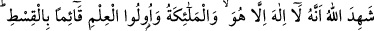
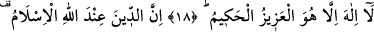
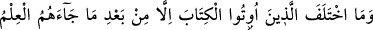
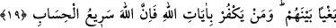
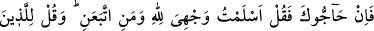
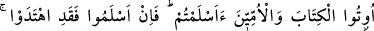
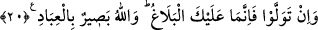

HAK KATINDAKİ DİN
18. Allah, adâleti ayakta tutarak (delilleriyle) şu husûsu açıklamıştır ki,
kendisinden başka ilah yoktur. Melekler ve ilim sahipleri de (bunu ikrâr
etmişlerdir. Evet) mutlak güç ve hikmet sahibi Allah’dan başka ilah yoktur.
19. Allah nezdinde hak din İslâm’dır. Kitap verilenler, kendilerine ilim geldikten
sonradır ki, aralarındaki kıskançlık yüzünden ayrılığa düştüler. Allah’ın âyetlerini
inkâr edenler bilmelidirler ki Allah’ın hesabı çok çabuktur.
20. Eğer seninle tartışmaya girerlerse de ki: “Bana uyanlarla birlikte ben
kendimi Allah’a teslim ettim.” Ehl-i kitâba ve ümmîlere de: “Siz de Allah’a teslim
oldunuz mu?” de. Eğer teslim oldularsa doğru yolu buldular demektir. Yok eğer yüz
çevirdilerse sana düşen, yalnızca duyurmaktır. Allah kullarını çok iyi görmektedir.
Bu âyet-i celîle, Şam’ın bilginlerinden iki adamın Peygamberimize gelip soru
sormaları üzerine nâzil olmuştur. Onlar şöyle sormuşlardı:
- “Sen Muhammed misin?”
- “Evet.”
- “Sen Ahmed misin?
- “Evet, ben Muhammed’im, Ahmed’im”
- “Öyleyse Allah’ın kitabındaki en büyük saâdeti bize haber ver!” Bunun üzerine bu
âyet-i celîle nâzil oldu. Bu âyette Allah kat’î huccetle isbât edip birliğine delâlet eden
eserlerini anlattı ki; O birdir, ortağı yoktur. Yarattığı her şeyi yalnız kendisi yaratmış,
kimse O’na bunda ortak olmamıştır. Çünkü hiçbir kimse bir şeyi yoktan var etme
kudretine sahip değildir.
İbn Abbas (r.a.) şöyle demiştir: “Allah Teâlâ ruhları cesetlerden dört bin sene önce
yarattı. Rızıkları da ruhlardan dört bin sene önce taksim etti. Yaratıkların
yaratılmasından önce gök, yer, deniz ve kara yokken kendisi, kendisine şehâdet etti ve